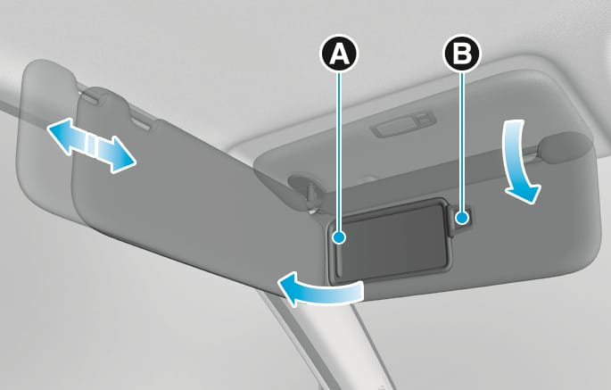

선바이저

2C_Sunvisor
선바이저를 적절한 각도로 펼치거나 돌려 운전자의 시야를 방해하는 직사광선을 차단하십시오.
-
선바이저 안쪽에는 거울(A)이 설치되어 있습니다.
-
거울을 사용한 후에는 커버를 닫고 선바이저를 원래 위치에 고정하십시오.
-
거울 옆의 티켓 홀더(B)에는 고속도로 통행권 등 작은 티켓을 보관할 수 있습니다.
선바이저 사용 시 전방 시야를 충분히 확보할 수 있도록 주의하십시오. 충분한 시야를 확보하지 못한 상태로 주행하면 심각한 사고가 발생할 수 있습니다.
-
사용 후 선바이저를 원위치 시키기 전에 반드시 스위치를 눌러 조명을 끄십시오. 계속 조명이 켜져 있으면 배터리가 방전될 수 있습니다.
-
티켓 홀더에 티켓 여러 장을 한 번에 보관하지 마십시오. 부품이 변형될 수 있습니다.